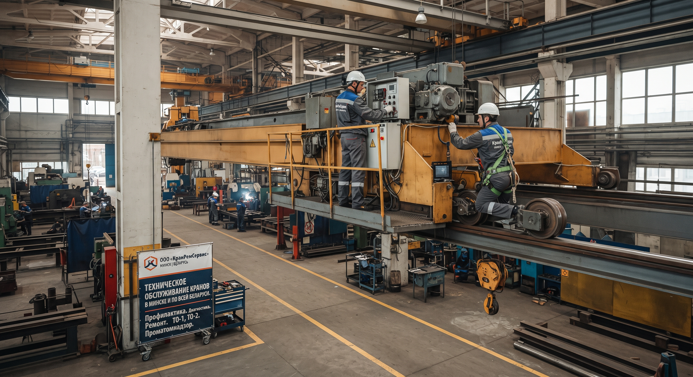

ООО «КранРемСервис» выполняет техническое обслуживание грузоподъёмных кранов всех типов: мостовых, козловых, кран-балок, консольных.
Выполняем ежесменное, периодическое (ТО-1, ТО-2) и сезонное обслуживание с соблюдением всех требований Проматомнадзора.

В зависимости от периодичности и объёма работ, техническое обслуживание делится на три вида. Мы выполняем все три — от ежесменного осмотра до сезонной подготовки.
Проводится перед началом работы. Оператор или машинист осматривает ключевые узлы и системы безопасности.
Задача: убедиться, что кран безопасен для работы.
Выполняется по графику через определённое количество моточасов или отработанных часов. Включает полную диагностику и регламентные работы.
Задача: предотвратить износ и поломки.
Проводится при подготовке оборудования к работе в зимний или летний период. Особенно важно для козловых кранов, работающих на улице.
Задача: адаптировать кран к сезонным условиям.
ППР — это система работ, которая позволяет предотвратить аварийные остановки и продлить срок службы крана. Мы составляем график ППР под ваш объект и работаем по нему.
Что входит в ППР:
Работа по договору: вы получаете официальный сервис, соответствие требованиям Проматомнадзора и гарантию на выполненные работы.
Прозрачный процесс — от первого звонка до регулярного обслуживания по графику.
Вы звоните или оставляете заявку. Мы уточняем тип крана, условия работы и задачи. При необходимости — выезжаем на объект для осмотра.
Срок: 1 рабочий день.
На основе осмотра и характера эксплуатации составляем график ТО или ППР — с указанием сроков, работ и ответственных.
Срок: 1–2 рабочих дня.
Выполняем ТО по графику — на объекте или на нашей базе. Ведём журналы, оформляем акты, выдаём дефектные ведомости при необходимости.
Срок: по графику.
По итогам каждого ТО предоставляем отчёт: что проверено, что отрегулировано, что рекомендовано заменить в ближайшее время. Гарантия на выполненные работы.
Срок: по завершении ТО.
1. Снижение риска аварийных остановок. Регулярное ТО предотвращает поломки до их появления.
2. Продление срока службы оборудования. Своевременная замена изнашиваемых деталей — кран работает дольше.
3. Соответствие требованиям Проматомнадзора. Ведение документации и соблюдение регламентов.
4. Фиксированная стоимость. Работаем по договору — без сюрпризов в счёте.
5. Приоритет при аварийном выезде. Клиенты на абонентском обслуживании получают приоритет.
Заполните форму — мы свяжемся с вами, уточним детали и рассчитаем стоимость работ. Ответим в течение 1 рабочего дня.